| |
cSounds.com - scanned synthesis - tutorial
A Csound TOOTorial by Richard Boulanger
Scanned synthesis represents a powerful and efficient technique for animating wavetables and controlling them in real-time. Developed by Bill Verplank, Rob Shaw, and Max Mathews between 1998 and 1999 at Interval Research, Inc. it is based on the psychoacoustics of how we hear and appreciate timbres and on our motor control (haptic) abilities to manipulate timbres during live performance.
Scanned Synthesis involves a slow dynamic system whose frequencies of vibration are below about 15 Hz. The ear cannot hear the low frequencies of the dynamic system. So, to make audible frequencies, the "shape" of the dynamic system, along a closed path, is scanned periodically. The "shape" is converted to a sound wave whose pitch is determined by the speed of the scanning function. Pitch control is completely separate from the dynamic system control. Thus timbre and pitch are independent.
This system can be looked upon as a dynamic wave table. The model can be compared to a slowly vibrating string, or a two dimensional surface obeying the wave equation.
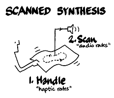
Verplank, Shaw and Mathews studied scanned synthesis chiefly with a finite element model of a generalized string — a collection of masses connected by springs and dampers that can be analyzed with Newton's laws. From there, they generalized a traditional string by adding dampers and springs to each mass.
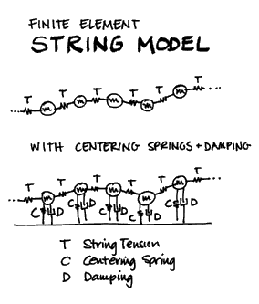
All parameters — mass, damping, earth-spring strength, and string tension can vary along the "string." The model is manipulated by pushing or hitting different masses (the individual samples in a very short wavetable) and by manipulating parameters. What is unique here is that the wavetable itself is a dynamic model.
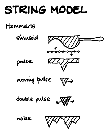
You are manipulating the mechanical model at haptic rates 0-10 Hz, and independent to this, you are scanning out the wavetable at the pitch frequency. Although, the table has its own dynamics, there are no discontinuities because the model is implemented as a circular string, so you end up with a 128 point looping oscillator with a constantly evolving loop. It is hard to believe, but true, that what results is a short sample that is animated and harmonically rich because of the complex interactive nature of the elements in the underlying system — the mechanics of the model.
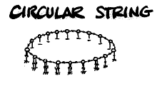
In fact, even enveloping can come directly from the model. It turns out that the specific setting of the centering springs can affect the damping of the system — low values allowing the rich timbre to ring, high values causing the tone to die away quickly.
In June of 1999, a graduate student from the MIT Media Lab, Paris Smaragdis, further generalized the model by added two Scanned Synthesis opcodes to Csound. The first is an opcode that defines the mass/spring network and sets it in motion (scanu); and the second is an opcode that follows a predefined path (trajectory) around the network and outputs the dynamic waveform at a user specified frequency and amplitude (scans).
The syntax for scanu is:
scanu init, irate, ifnvel, ifnmass, ifnstif, ifncentr, ifndamp, kmass, kstif, kcentr, kdamp, ileft, iright, kx, ky, ain, idisp, id
init: The initial position of the masses. If this is a negative number, then the absolute of init signifies the table to use as a hammer shape. If init > 0, the length of it should be the same as the number of masses (128), otherwise it can be anything.
irate: The amount of time between successive updates of the mass state. Kind of like the sample period of the system. If the number is big, the string will update at a slow rate showing little timbral variability; otherwise it will change rapidly resulting in a more dynamic sound.
ifnvel: The number of the ftable that contains the initial velocity for each mass. It should have the same size as the number of masses (128).
ifnmass: The number of the ftable that contains the mass of each mass. It should have the same size as the number of masses (128).
ifnstif: The number of the ftable that contains the spring stiffness of each connection. It should have the same size as the square of the number of masses (16384). The data ordering is a row after row dump of the connection matrix of the system.
ifncentr: The number of the ftable that contains the centering force of each mass. It should have the same size as the number of masses (128).
ifndamp: The number of the ftable that contains the damping factor of each mass. It should have the same size as the number of masses (128).
kmass: Scales the masses.
kstif: Scales the spring stiffness.
kcentr: Scales the centering force.
kdamp: Scales the damping.
ileft: If init < 0, the position of the left hammer (ileft = 0 is hit at leftmost, ileft = 1 is hit at rightmost). iright: If init < 0, the position of the right hammer (iright = 0 is hit at leftmost, iright = 1 is hit at rightmost).
kx: The position of an active hammer along the string (0 leftmost, 1 rightmost). The shape of the hammer is determined by init. The power it pushes with is ky.
ky: The power that the active hammer uses.
ain: The audio input that adds to the velocity of the masses.
idisp: If 0, no display. If 1, display of the dynamic evolution of the masses.
id: The ID of the scanu opcode. This will be used to point the scanning opcode (scans) to the proper waveform maker. If this value is negative, it indicates the wavetable on which to write the waveshape. That wavetable can be used later from another opcode to generate sound. Note: The initial contents of this table will be destroyed, so don¹t rely on them being there.
The syntax for scans is:
ar scans kamp, kfreq, ifntraj, id[, korder]
kamp: The output amplitude. Note that the resulting amplitude is also dependent to the state of the wavetable.
kfreq: The frequency of the scan rate.
ifntraj: The number of the ftable that contains the scanning trajectory. This is a series of numbers that contain addresses of masses - the order of these addresses is used as the scan path. It should not contain more values than the number of masses (128), and it should not contain negative numbers.
id: The ID number of the scanu waveform to use.
korder: The order of interpolation used internally. It can take any value in the range 1 to 4, and defaults to 4, which is quartic interpolation. The setting of 2 is quadratic and 1 is linear. The higher numbers are slower, but not necessarily better.
What is unique about the Smaragdis Csound implementation is the fact that he added support for a scanning path or matrix. Essentially this offers the possibility of reconnecting the samples (dots) in different orders (not necessarily to their direct neighbors) causing the signal to propagate quite differently. Essentially, the matrix has the effect of "molding" this surface into a radically different shape —
String:
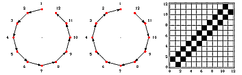
Circle:
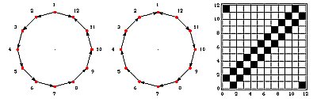
Torus:
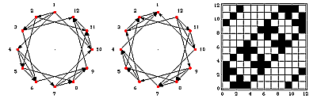
All Connect: (note all squares should be blackened in this figure meaning that all points connect to all other points in the table.)
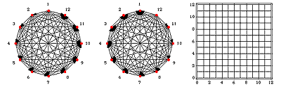
To produce the matrices, the file format is straightforward. For example for 4 masses we have the following grid describing the connections:
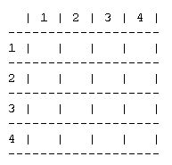
Whenever two masses are connected then the point they define is 1, so for a unidirectional string we would have the following connections, (1,2),(2,3), (3,4) (if it was bidirectional we would also have (2,1), (3,2), (4,3)). So I fill these out with ones and the rest with zeros and I get:
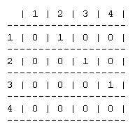
Similarly for the other shapes, just find the connections and fill them out. This gets saved in an ASCII file column by column, so the 4 mass string would be saved as:
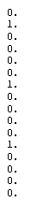
The following instrument uses a 128 point string matrix show above.
|
<CsoundSynthesizer>
<CsOptions>
</CsOptions>
<CsInstruments>
instr 1
a0 = 0
; scanu init,irate,ifnvel,ifnmass,ifnstif,ifncentr,ifndamp,kmass,kstif,/
; kcentr,kdamp,ileft,iright,kx,ky,ain,idisp,id
scanu 1, .01, 6, 2, 3, 4, 5, 2, .1, .1, -.01, .1, .5, 0, 0, a0, 1, 2
;ar scans kamp, kfreq,ifntraj,id[, korder]
a1 scans ampdb(p4), cpspch(p5), 7, 2
out a1
endin
</CsInstruments>
<CsScore>
; Initial condition
f1 0 128 7 0 64 1 64 0
; Masses
f2 0 128 -7 1 128 1
; Spring matrices
f3 0 16384 -23 "string-128"
; Centering force
f4 0 128 -7 0 128 2
; Damping
f5 0 128 -7 1 128 1
; Initial velocity
f6 0 128 -7 0 128 0
; Trajectories
f7 0 128 -5 .001 128 128
; Note list
i1 0 10 86 6.00
i1 11 14 86 7.00
i1 15 20 86 5.00
</CsScore>
</CsoundSynthesizer>
|
|
Furthermore, by providing a means to update the velocity of the masses with real-time audio, one has a means of "injecting" natural energy and randomness into the system resulting in wonderful resonator and vocoder effects.
|
<CsoundSynthesizer>
<CsOptions>
</CsOptions>
<CsInstruments>
instr 2
iamp = ampdb(p4)
iamp = iamp*.5
a0 soundin "hellorcb.aif"
a1 = a0/30000
scanu 1,.01,6,2,33,44,5,2,.01,.05,-.05,.1,.5,0,0,a1,1,0
a2 scans iamp, cpspch(p5), 7, 0
a3 scans iamp, cpspch(p5)*1.01, 77, 0
out a3+a2+(a0*.1)
endin
</CsInstruments>
<CsScore>
; Initial condition
f1 0 128 7 0 64 1 64 0
; Masses
f2 0 128 -7 1 128 1
; Spring matrices
f33 0 16384 -23 "cylinder-128,8"
; Centering force
f44 0 128 -7 2 64 0 64 2
; Damping
f5 0 128 -7 1 128 1
; Initial velocity
f6 0 128 -7 -.0 128 .0
; Trajectories
f7 0 128 -5 .001 128 128
f77 0 128 -23 "spiral-8,16,128,2,1over2"
; Note list
i2 0 5 63 6.00
i2 6 5 60 7.00
i2 10 5 60 8.00
i2 14 7 60 5.00
</CsScore>
</CsoundSynthesizer>
|
|
Finally, because Smaragdis has separated the opcode that scans the waveform from the one that computes the waveform it is possible to apply the scanning system to other "classic" techniques and dynamically animate them. Imagine, if you can, the sound of scanned FM, scanned granular, or scanned subtractive. Since many of Csound signal generators use wavetables, they can practically all be scanned - and thus "animated" in a new, vivid and controllable way!
|
<CsoundSynthesizer>
<CsOptions>
Csound -p -P1000 -m0 -A -iadc -MIDI -s -b128 -B128 -V50 -E32
</CsOptions>
<CsInstruments>
; FM instrument with scanned wavetable as source f8
instr 1
i1 cpsmidib
a1 foscili 2000, i1, 1, .5, .01, 8
out a1
endin
; Vibrating structure with audio injection
instr 2
a0 in
a0 = a0/15000
scanu 1, .01, 6, 2, 3, 4, 5, 2, .01, .1, -.05, .1, .5, 0, 0, a0, 0, -8
endin
</CsInstruments>
<CsScore>
; Initial condition
f1 0 128 7 0 64 0 64 0
; Masses
f2 0 128 -7 1 128 1
; Spring matrix
f3 0 0 -23 "circularstring-128"
; Centering force
f4 0 128 -7 0 64 2 64 0
; Damping
f5 0 128 -7 1 128 1
; Initial velocity
f6 0 128 -7 -.0 128 .0
; Trajectory
f7 0 128 -7 0 128 128
; sine
f8 0 128 10 1
; Notelist
f0 20
i2 0 20
</CsScore>
</CsoundSynthesizer>
|
|
|
Conclusion & Acknowledgements
Charting and discovering these new worlds of sound will be up to you, and for now anyway, the only place to do this exploring is through Csound.
Thanks to Bill Verplank, Max Mathews, Rob Shaw and especially Paris Smaragdis for bringing these new sonic landscapes to the world and the world of Csound.
Illustrations by Bill Verplank, Matrices by Paris Smaragdis. |
|
- [+] Got more questions, comments or suggestions? let us know:
- support@csounds.com
|